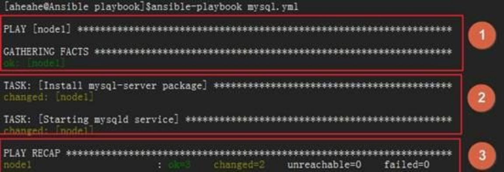

Ansible playbook
简介
- playbook 是 ansible 用于配置，部署，和管理被控节点的剧本。
通过 playbook 的详细描述，执行其中的一系列 tasks ，可以让远端主机达到预期的状态。playbook 就像 Ansible 控制器给被控节点列出的的一系列 to-do-list ，而被控节点必须要完成。
也可以这么理解，playbook 字面意思，即剧本，现实中由演员按照剧本表演，在Ansible中，这次由计算机进行表演，由计算机安装，部署应用，提供对外服务，以及组织计算机处理各种各样的事情。
- playbook 是 ansible 用于配置，部署，和管理被控节点的剧本。
Ansible playbook使用场景
- 执行一些简单的任务，使用ad-hoc命令可以方便的解决问题，但是有时一个设施过于复杂，需要大量的操作时候，执行的ad-hoc命令是不适合的，这时最好使用playbook。
就像执行shell命令与写shell脚本一样，也可以理解为批处理任务，不过playbook有自己的语法格式。
使用playbook你可以方便的重用这些代码，可以移植到不同的机器上面，像函数一样，最大化的利用代码。在你使用Ansible的过程中，你也会发现，你所处理的大部分操作都是编写playbook。可以把常见的应用都编写成playbook，之后管理服务器会变得十分简单。
- 执行一些简单的任务，使用ad-hoc命令可以方便的解决问题，但是有时一个设施过于复杂，需要大量的操作时候，执行的ad-hoc命令是不适合的，这时最好使用playbook。
Ansible playbook格式
1）格式简介
playbook由YMAL语言编写。YAML( /ˈjæməl/ )参考了其他多种语言，包括：XML、C语言、Python、Perl以及电子邮件格式RFC2822，Clark Evans在2001年5月在首次发表了这种语言，另外Ingy döt Net与OrenBen-Kiki也是这语言的共同设计者。
YMAL格式是类似于JSON的文件格式，便于人理解和阅读，同时便于书写。首先学习了解一下YMAL的格式，对我们后面书写playbook很有帮助。以下为playbook常用到的YMAL格式：
1、文件的第一行应该以 “—“ (三个连字符)开始，表明YMAL文件的开始。
2、在同一行中，#之后的内容表示注释，类似于shell，python和ruby。
3、YMAL中的列表元素以”-”开头然后紧跟着一个空格，后面为元素内容。
4、同一个列表中的元素应该保持相同的缩进。否则会被当做错误处理。
5、play中hosts，variables，roles，tasks等对象的表示方法都是键值中间以”:”分隔表示，”:”后面还要增加一个空格。示例
下面是一个举例：
1
2
3
4
5
6
7
8
9
10---
#安装与运行mysql服务
- hosts: node1
remote_user: root
tasks:
- name: install mysql-server package
yum: name=mysql-server state=present
- name: starting mysqld service
service: name=mysql state=started我们的文件名称应该以
.yml结尾，像我们上面的例子就是mysql.yml。其中，有三个部分组成：host部分：使用 hosts 指示使用哪个主机或主机组来运行下面的 tasks ，每个 playbook 都必须指定 hosts ，hosts也可以使用通配符格式。主机或主机组在 inventory 清单中指定，可以使用系统默认的/etc/ansible/hosts，也可以自己编辑，在运行的时候加上-i选项，指定清单的位置即可。在运行清单文件的时候，–list-hosts选项会显示那些主机将会参与执行 task 的过程中。remote_user：指定远端主机中的哪个用户来登录远端系统，在远端系统执行 task 的用户，可以任意指定，也可以使用 sudo，但是用户必须要有执行相应 task 的权限。tasks：指定远端主机将要执行的一系列动作。tasks 的核心为 ansible 的模块，前面已经提到模块的用法。tasks 包含name和要执行的模块，name 是可选的，只是为了便于用户阅读，不过还是建议加上去，模块是必须的，同时也要给予模块相应的参数。
使用ansible-playbook运行playbook文件，得到如下输出信息，输出内容为JSON格式。并且由不同颜色组成，便于识别。一般而言
| 绿色代表执行成功，系统保持原样
| 黄色代表系统代表系统状态发生改变
| 红色代表执行失败，显示错误输出
执行有三个步骤：1、收集facts 2、执行tasks 3、报告结果- 
2）核心元素
Playbook的核心元素：
Hosts：主机组；Tasks：任务列表；Variables：变量，设置方式有四种；Templates：包含了模板语法的文本文件；Handlers：由特定条件触发的任务；3）基本组件
Playbooks配置文件的基础组件：
Hosts：运行指定任务的目标主机remoute_user：在远程主机上执行任务的用户；sudo_user：tasks：任务列表格式：
tasks：
– name: TASK_NAME
module: arguments
notify: HANDLER_NAME
handlers:
– name: HANDLER_NAME
module: arguments
模块，模块参数：格式：
(1) action: module arguments
(2) module: arguments
注意：shell和command模块后面直接跟命令，而非key=value类的参数列表；handlers：任务，在特定条件下触发；接收到其它任务的通知时被触发；- 注
- (1) 某任务的状态在运行后为changed时，可通过“notify”通知给相应的handlers；
(2) 任务可以通过“tags“打标签，而后可在ansible-playbook命令上使用-t指定进行调用；
- (1) 某任务的状态在运行后为changed时，可通过“notify”通知给相应的handlers；
- 注
4）variables 部分
上文中，我们说到了
variables是变量，有四种定义方法，现在我们就来说说这四种定义方法：① facts ：可直接调用
上一篇中，我们有说到
setup这个模块，这个模块就是通过调用facts组件来实现的。我们这里的variables也可以直接调用facts组件。
具体的facters我们可以使用setup模块来获取，然后直接放入我们的剧本中调用即可。
#### ② 用户自定义变量
我们也可以直接使用用户自定义变量，想要自定义变量有以下两种方式：
> 通过命令行传入
`ansible-playbook`命令的命令行中的`-e VARS, --extra-vars=VARS`，这样就可以直接把自定义的变量传入。
> 在playbook中定义变量
我们也可以直接在playbook中定义我们的变量：
1
2
3
vars:
- var1: value1
- - var2: value2
5）模板 templates
模板是一个文本文件，嵌套有脚本（使用模板编程语言编写）。
Jinja2：Jinja2是python的一种模板语言，以Django的模板语言为原本。
模板支持：字符串：使用单引号或双引号；
数字：整数，浮点数；
列表：[item1, item2, …]
元组：(item1, item2, …)
字典：{key1:value1, key2:value2, …}
布尔型：true/false
算术运算：
+, -, , /, //, %, *
比较操作：
==, !=, >, >=, <, <=
逻辑运算：
and, or, not通常来说，模板都是通过引用变量来运用的。
6）条件测试
when语句：在task中使用，jinja2的语法格式。
举例如下：1
2
3
4
5
6
7tasks:
- name: install conf file to centos7
template: src=files/nginx.conf.c7.j2
when: ansible_distribution_major_version == "7"
- name: install conf file to centos6
template: src=files/nginx.conf.c6.j2
when: ansible_distribution_major_version == "6"循环：迭代，需要重复执行的任务；
对迭代项的引用，固定变量名为”item”，而后，要在task中使用with_items给定要迭代的元素列表；
举例如下：1
2
3
4
5
6
7tasks:
- name: unstall web packages
yum: name={{ item }} state=absent
with_items:
- httpd
- php
- php-mysql
### 7）字典
ansible playbook 还支持字典功能。举例如下：
1
2
3
4
5
6
7
8
9
10
11
12
13
14
15
16
17
18
- name: install some packages
yum: name={{ item }} state=present
with_items:
- nginx
- memcached
- php-fpm
- name: add some groups
group: name={{ item }} state=present
with_items:
- group11
- group12
- group13
- name: add some users
user: name={{ item.name }} group={{ item.group }} state=present
with_items:
- { name: 'user11', group: 'group11' }
- { name: 'user12', group: 'group12' }
- { name: 'user13', group: 'group13' }
8）角色订制：roles
① 简介
对于以上所有的方式有个弊端就是无法实现复用假设在同时部署Web、db、ha 时或不同服务器组合不同的应用就需要写多个yml文件。很难实现灵活的调用。
roles 用于层次性、结构化地组织playbook。roles 能够根据层次型结构自动装载变量文件、tasks以及handlers等。要使用roles只需要在playbook中使用include指令即可。简单来讲，roles就是通过分别将变量(vars)、文件(file)、任务(tasks)、模块(modules)及处理器(handlers)放置于单独的目录中，并可以便捷地include它们的一种机制。角色一般用于基于主机构建服务的场景中，但也可以是用于构建守护进程等场景中。② 角色集合
角色集合：roles/
mysql/
httpd/
nginx/
files/：存储由copy或script等模块调用的文件；
tasks/：此目录中至少应该有一个名为main.yml的文件，用于定义各task；其它的文件需要由main.yml进行“包含”调用；
handlers/：此目录中至少应该有一个名为main.yml的文件，用于定义各handler；其它的文件需要由main.yml进行“包含”调用；
vars/：此目录中至少应该有一个名为main.yml的文件，用于定义各variable；其它的文件需要由main.yml进行“包含”调用；
templates/：存储由template模块调用的模板文本；
meta/：此目录中至少应该有一个名为main.yml的文件，定义当前角色的特殊设定及其依赖关系；其它的文件需要由main.yml进行“包含”调用；
default/：此目录中至少应该有一个名为main.yml的文件，用于设定默认变量；
PlayBook运行方式
ansible-playbook --check 只检测可能会发生的改变,但不真执行操作
ansible-playbook --list-hosts 列出运行任务的主机
ansible-playbook --syntax-check playbook.yaml 语法检测
ansible-playbook -t TAGS_NAME playbook.yaml 只执行TAGS_NAME任务
ansible-playbook playbook.yaml 运行Playbook简单应用
通过playbook安装管理redis服务
脚本
1
2
3
4
5
6
7
8
9
10
11
12[root@ansible ~]# mkdir playbooks
[root@ansible ~]# cd playbooks/
[root@ansible playbooks]# vim redis.yaml
- hosts: all
remote_user: root
tasks:
- name: install redis
yum: name=redis state=latest
- name: start redis
service: name=redis state=started
语法检测:
1
2
3
4[root@ansible playbooks]# ansible-playbook --syntax-check redis.yaml
playbook: redis.yaml
[root@ansible playbooks]#
将要在主机上执行:
1
2
3
4
5
6
7
8
9
10
11
12
13
14
15
16
17
18
19
20
21root@ansible playbooks]# ansible-playbook redis.yaml
PLAY [all] *********************************************************************************
TASK [Gathering Facts] *********************************************************************
ok: [192.168.0.80]
ok: [192.168.0.117]
TASK [install redis] ***********************************************************************
changed: [192.168.0.80]
changed: [192.168.0.117]
TASK [start redis] *************************************************************************
changed: [192.168.0.80]
changed: [192.168.0.117]
PLAY RECAP *********************************************************************************
192.168.0.117 : ok=3 changed=2 unreachable=0 failed=0
192.168.0.80 : ok=3 changed=2 unreachable=0 failed=0
[root@ansible playbooks]#
在目标主机上查看效果
1
2
3
4[root@LB-BACKUP ~]# lsof -i:6379
COMMAND PID USER FD TYPE DEVICE SIZE/OFF NODE NAME
redis-ser 102412 redis 4u IPv4 379993 0t0 TCP localhost:6379 (LISTEN)
[root@LB-BACKUP ~]#
故障
#对redis更加的复杂的操作
由于上面的操作是直接安装redis服务并启动,并没有配置文件,这还不能往生产环境中使用,生产环境中的redis肯定有不同的配置项,因此需要在安装时提供配置文件
1
2
3
4
5
6
7
8
9
10
11
12
13
14
15
16
17
18
19
20
21
22
23
24
25
26[root@ansible playbooks]# yum install redis -y
[root@ansible playbooks]# cp /etc/redis.conf .
[root@ansible playbooks]# pwd
/root/playbooks
[root@ansible playbooks]# ls
redis.conf redis.yaml
[root@ansible playbooks]# vim redis.conf
bind 0.0.0.0 添加配置
[root@ansible playbooks]# cp redis.yaml redis2.yaml
[root@ansible playbooks]# vim redis2.yaml
- hosts: all #所有远程主机
remote_user: root #以远程主机上root用户执行
tasks: #任务
- name: install redis #任务之安装
yum: name=redis state=latest #动作调用yum模块安装
- name: copy config file #任务之复制同步配置文件到远程目标主机
copy: src=/root/playbooks/redis.conf dest=/etc/redis.conf owner=redis #动作copy模块执行
notify: restart redis #触发的动作的名字，发通知给handlers
tags: configfile #任务标记名configfile
- name: start redis #任务之启动redis
service: name=redis state=started #动作调用sevice模块
handlers: #特定情况下,接收到其他任务的通知时被触发
- name: restart redis
service: name=redis state=restarted
- ### 先卸载redis
- - - 1
2
3
4
5
6
7
8
9
10
11
12
13
14
15
16
17
18
19
20
21
22
23
24
25
26
27
[root@ansible playbooks]# cat redis3.yaml
- hosts: all
remote_user: root
tasks:
- name: remove redis
yum: name=redis state=absent
[root@ansible playbooks]#
[root@ansible playbooks]# ansible-playbook redis3.yaml
PLAY [all] *********************************************************************************
TASK [Gathering Facts] *********************************************************************
ok: [192.168.0.80]
ok: [192.168.0.117]
TASK [remove redis] ************************************************************************
changed: [192.168.0.80]
changed: [192.168.0.117]
PLAY RECAP *********************************************************************************
192.168.0.117 : ok=2 changed=1 unreachable=0 failed=0
192.168.0.80 : ok=2 changed=1 unreachable=0 failed=0
[root@ansible playbooks]#
- ### 再来安装和配置
- 1
2
3
4
5
6
7
8
9
10
11
12
13
14
15
16
17
18
19
20
21
22
23
24
25
26
27
[root@ansible playbooks]# ansible-playbook redis2.yaml
PLAY [all] *********************************************************************************
TASK [Gathering Facts] *********************************************************************
ok: [192.168.0.80]
ok: [192.168.0.117]
TASK [install redis] ***********************************************************************
changed: [192.168.0.80]
changed: [192.168.0.117]
TASK [copy config file] ********************************************************************
changed: [192.168.0.80]
changed: [192.168.0.117]
TASK [start redis] *************************************************************************
changed: [192.168.0.80]
changed: [192.168.0.117]
RUNNING HANDLER [restart redis] ************************************************************
changed: [192.168.0.80]
changed: [192.168.0.117]
PLAY RECAP *********************************************************************************
192.168.0.117 : ok=5 changed=4 unreachable=0 failed=0
192.168.0.80 : ok=5 changed=4 unreachable=0 failed=0
- ### 在目标机器上查看效果
- 1
2
3
[root@www tmp]# netstat -anplut|grep redis
tcp 0 0 0.0.0.0:6379 0.0.0.0:* LISTEN 22081/redis-server
[root@www tmp]#